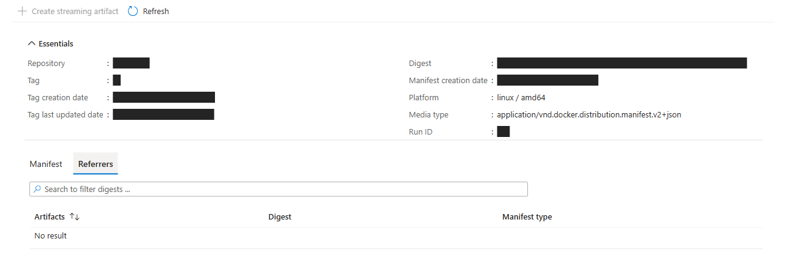

Artifact Streaming을 사용하면 AKS 노드가 전체 이미지를 다운로드하기 전에 컨테이너 시작에 필요한 이미지 콘텐츠부터 가져올 수 있습니다. 이점은 대형 이미지, 노드 스케일 아웃, 대량 Pod 시작에서 가장 뚜렷합니다. 이 가이드는 원본의 2026년 7월 지원 현황을 유지합니다. Linux AMD64 가용성은 GA로 설명되어 있으며 Azure CLI 2.87.0 이상이 필요합니다. 로컬에서 테스트한 CLI 2.86.0은 여전히 Preview 경고를 출력했습니다. 배포 전에 최신 공식 지원 표와 설치된 CLI를 확인하세요. 이는 문서화된 사전 요구 사항이지 이 사이트가 수행한 측정 결과가 아닙니다.
1. 적격 조건과 제외 사항 확인
| 구성 요소 | 요구 사항 |
|---|---|
| Azure CLI | 2.87.0 이상 |
| AKS | Kubernetes 1.25 이상 |
| ACR | Premium SKU |
| 노드 운영 체제 | Ubuntu 20.04 이상 또는 Azure Linux |
| 이미지 아키텍처 | Linux AMD64 |
| 인증 | kubelet ID를 사용하는 AKS–ACR 통합. 일반적으로 --attach-acr로 구성합니다. |
| 운영자 권한 | 노드 풀 구성에는 Azure Kubernetes Service Contributor가 필요하며 레지스트리 작업에는 별도의 적절한 권한이 필요합니다. |
- Windows 및 ARM64 이미지는 지원되지 않습니다. 다중 아키텍처 이미지에서는 AMD64 부분만 스트리밍 후보입니다.
- Standard 및 Basic ACR 계층에서는 이 기능을 제공하지 않습니다.
- 원본은 고객 관리형 키로 암호화된 레지스트리와 지역 복제 레지스트리의 아티팩트 생성/동기화를 제외합니다.
image@sha256:...와 같은 이미지 다이제스트가 아닌 태그로 가져오세요. 문서화된 시나리오에서는 GitOps 또는 Flux의 다이제스트 고정이 스트리밍을 막습니다.imagePullSecrets, 비 Entra 범위 토큰 또는 ACR 관리자 자격 증명으로 인증한 가져오기는 일반 가져오기로 대체됩니다. 따라서 가져오기 성공 자체가 스트리밍을 증명하지는 않습니다.- 30 GB가 넘는 이미지가 기술적으로 금지된다고 설명되지는 않지만 원본은 체감 이점이 줄어든다고 경고합니다. 매우 큰 정적 데이터는 마운트된 볼륨을 사용하는 편이 좋습니다.
아래 값을 자신의 리소스에 맞게 설정하세요. 명령은 Bash 예시이며 게시 과정에서 실행한 명령이 아닙니다.
export RESOURCE_GROUP="YOUR_RESOURCE_GROUP"
export CLUSTER="YOUR_CLUSTER"
export LOCATION="YOUR_AZURE_REGION"
export ACR_NAME="YOUR_ACR_NAME"
export REPOSITORY="YOUR_REPOSITORY"
export TAG="YOUR_IMAGE_TAG"
export NODEPOOL="YOUR_NODEPOOL"
az --version
# Upgrade when below the required version.
az upgrade
az aks show -g "$RESOURCE_GROUP" -n "$CLUSTER" --query kubernetesVersion -o tsv
az acr show --name "$ACR_NAME" --query sku.name -o tsv
az aks check-acr --resource-group "$RESOURCE_GROUP" --name "$CLUSTER" --acr "$ACR_NAME.azurecr.io"
az aks nodepool list -g "$RESOURCE_GROUP" --cluster-name "$CLUSTER" \
--query "[].{pool:name, osType:osType, osSKU:osSKU}" -o table
kubectl get deployments -A -o jsonpath='{range .items[*]}{.metadata.namespace}/{.metadata.name}{"\t"}{range .spec.template.spec.containers[*]}{.image}{" "}{end}{"\n"}{end}' | grep '@sha256'
# Confirm architecture as well; the source's node-pool query does not show it.
kubectl get nodes -L kubernetes.io/arch,kubernetes.io/os2. 콜드 가져오기 기준선 설정
스트리밍을 활성화하기 전에 측정하세요. 두 실험에서 같은 이미지와 노드 VM 크기를 사용하고 새 노드 또는 테스트 이미지가 없는 노드를 사용하세요. 캐시된 계층을 재사용하면 개선 효과가 사라지거나 실제로 없는 개선처럼 보일 수 있습니다. 동등한 콜드 캐시 조건에서 최소 3회 반복하고 결과의 평균을 구하세요. 단일 관찰은 네트워크 변동에 민감합니다.
격리된 테스트 노드 풀 만들기
az aks nodepool add -g "$RESOURCE_GROUP" --cluster-name "$CLUSTER" \
--name streamtest --node-count 1 --node-vm-size Standard_D4ds_v5 \
--mode User --os-sku Ubuntu
# Optional isolation: only Pods with the matching toleration can run here.
az aks nodepool update -g "$RESOURCE_GROUP" --cluster-name "$CLUSTER" \
--name streamtest --node-taints stream-test=true:NoSchedule제출, 이미지 가져오기, 준비 완료를 따로 측정하기
# Record the timestamp BEFORE submitting the Pod.
date -u +"%Y-%m-%dT%H:%M:%S.%3NZ"
kubectl run streaming-test --image="$ACR_NAME.azurecr.io/$REPOSITORY:$TAG" \
--overrides='{"spec":{"tolerations":[{"key":"stream-test","operator":"Equal","value":"true","effect":"NoSchedule"}],"nodeSelector":{"agentpool":"streamtest"}}}' \
--restart=Never -n default
time kubectl wait --for=condition=Ready pod/streaming-test -n default --timeout=600s
kubectl get events -n default --field-selector involvedObject.name=streaming-test \
--sort-by=.lastTimestamp \
-o custom-columns=REASON:.reason,TIME:.lastTimestamp,MESSAGE:.message
az acr repository show --name "$ACR_NAME" --image "$REPOSITORY:$TAG" --query "imageSize" -o tsv
kubectl delete pod streaming-test -n default| 지표 | 기록 방법 |
|---|---|
| 이미지 가져오기 시간 | Pulling과 Pulled 이벤트 타임스탬프의 차이 |
| Ready까지의 총시간 | Pod 제출 타임스탬프부터 Ready 완료까지. kubectl wait 자체의 실행 시간은 제출 이후에 시작하므로 전체 총시간이 아닙니다. |
| 컨테이너 시작 | Started 이벤트. 애플리케이션 준비 완료와는 다릅니다. |
| 이미지 크기 | 레지스트리가 바이트 단위로 보고하는 imageSize. 값이 있으면 MB로 변환합니다. 이 쿼리가 필드를 반환하지 않으면 빈 값을 0으로 취급하지 말고 지원되는 매니페스트 메타데이터를 확인하세요. |
| 노드 조건 | VM 크기, 풀, OS, 아키텍처, 새 노드 여부 및 캐시 상태 |
원본은 Pod 생성 후에 제출 타임스탬프를 기록합니다. 위 순서는 Ready까지의 시간을 실제보다 짧게 계산하지 않도록 이를 생성 전으로 옮겼습니다. 이벤트 타임스탬프와 집계의 정밀도가 낮을 수 있으므로 원시 시간 근거를 보존하고 일관된 측정 방법을 사용하세요.
3. 레지스트리 아티팩트 준비
이미지 플랫폼 메타데이터와 참조 아티팩트 탭 찾기

리소스가 없을 때만 만드세요. 기본 레지스트리 설정은 이후 명령의 CLI 구성을 변경합니다. 이미지를 가져오거나 푸시하고 스트리밍 아티팩트를 만든 뒤 참조자(referrer)를 확인하세요. 리포지토리 수준의 자동 아티팩트 생성은 선택 사항입니다.
az group create --name "$RESOURCE_GROUP" --location "$LOCATION"
az acr create --resource-group "$RESOURCE_GROUP" --name "$ACR_NAME" --sku Premium
az configure --defaults acr="$ACR_NAME"
# Skip import if the target image already exists.
az acr import --source "docker.io/YOUR_SOURCE_REPOSITORY:YOUR_SOURCE_TAG" --image "$REPOSITORY:$TAG"
az acr artifact-streaming create --image "$REPOSITORY:$TAG"
# Optional: generate streaming artifacts for future images in this repository.
az acr artifact-streaming update --name "$ACR_NAME" --repository "$REPOSITORY" --enable-streaming true
az acr manifest list-referrers --name "$REPOSITORY:$TAG" --registry "$ACR_NAME"4. 노드 풀 활성화 및 프로필 확인
새 풀 생성 또는 기존 풀 업데이트 중 하나를 선택하세요. 둘 다 무분별하게 실행하지 마세요. 워크로드가 실제로 활성화된 풀에 스케줄링되는지 확인하세요.
# New pool:
az aks nodepool add --resource-group "$RESOURCE_GROUP" \
--cluster-name "$CLUSTER" --name "$NODEPOOL" --enable-artifact-streaming
# OR an existing pool:
az aks nodepool update --resource-group "$RESOURCE_GROUP" \
--cluster-name "$CLUSTER" --name "$NODEPOOL" --enable-artifact-streaming
az aks nodepool show --resource-group "$RESOURCE_GROUP" \
--cluster-name "$CLUSTER" --name "$NODEPOOL" --query artifactStreamingProfile
# Expected profile: enabled is true.5. 활성화 후 실험 반복
캐시가 없고 스트리밍이 활성화된 노드에서 동일한 이미지, VM 크기, 시간 측정 절차, 반복 횟수를 사용하세요. 풀에 테스트 taint가 있으면 예시처럼 toleration을 유지하세요. Pod만 삭제해도 캐시된 이미지 계층은 제거되지 않습니다.
date -u +"%Y-%m-%dT%H:%M:%S.%3NZ"
kubectl run streaming-test-after --image="$ACR_NAME.azurecr.io/$REPOSITORY:$TAG" \
--overrides="{\"spec\":{\"tolerations\":[{\"key\":\"stream-test\",\"operator\":\"Equal\",\"value\":\"true\",\"effect\":\"NoSchedule\"}],\"nodeSelector\":{\"agentpool\":\"$NODEPOOL\"}}}" \
--restart=Never -n default
time kubectl wait --for=condition=Ready pod/streaming-test-after -n default --timeout=600s
kubectl get events -n default --field-selector involvedObject.name=streaming-test-after \
--sort-by=.lastTimestamp \
-o custom-columns=REASON:.reason,TIME:.lastTimestamp,MESSAGE:.message
kubectl delete pod streaming-test-after -n default| 지표 | 활성화 전: 최소 3회 콜드 실행 평균 | 활성화 후: 최소 3회 콜드 실행 평균 | 개선율 |
|---|---|---|---|
| Pulling에서 Pulled까지 | 측정값 기록 | 측정값 기록 | (이전 − 이후) / 이전 × 100% |
| 제출에서 Ready까지 | 측정값 기록 | 측정값 기록 | (이전 − 이후) / 이전 × 100% |
원본에는 수치로 된 속도 개선 결과가 없습니다. 이는 벤치마크 템플릿이지 측정된 성능에 대한 주장이 아닙니다. 수백 MB에서 수 GB의 대형 이미지가 수십 MB에 불과한 이미지보다 이점을 보일 가능성이 큽니다. 예상보다 개선 폭이 작다면 해석에 앞서 태그 기반 배포와 kubelet ID 인증을 다시 확인하세요.
6. 롤백 및 테스트 리소스 제거
az aks nodepool update --resource-group "$RESOURCE_GROUP" \
--cluster-name "$CLUSTER" --name "$NODEPOOL" --disable-artifact-streaming
# Optional and destructive: remove only the dedicated test pool after confirming it has no needed workloads.
az aks nodepool delete -g "$RESOURCE_GROUP" --cluster-name "$CLUSTER" --name streamtest --no-wait노드 풀 기능 비활성화가 문서화된 롤백 방법입니다. 이는 레지스트리 참조자 제거 또는 리포지토리 자동 생성 설정 변경과는 별개입니다. 원본은 레지스트리 정리 절차를 제공하지 않습니다.
참고 자료와 원본의 범위
이 문서는 원본의 기능 제약과 버전 요구 사항을 보존합니다. 배포하는 서비스 및 CLI 버전을 기준으로 다시 확인하세요. 이 게시물을 검증하기 위해 Azure 리소스나 원본 명령을 실행하지 않았습니다.
참고 리소스
이 주제에는 별도로 배포하는 참고 파일이 없습니다. 본문의 예제를 활용하고 아래 편집 안내에서 원본 자료의 제공 범위를 확인하세요.
편집 및 출처 안내
다음 원본 자료를 하나의 기술 가이드로 정리했습니다.
- AKS Artifact Streaming(Linux) 배포 가이드
- 비공개 환경 식별자는 입력 변수로 대체했습니다. 원래 환경 값이나 비공개 원본 링크는 게시하지 않습니다.
- 저장소 루트의 README는 색인일 뿐이며 추가 기술 절차를 제공하지 않습니다.
- 이 원본 폴더에는 독립된 YAML 리소스가 없으므로 다운로드를 임의로 만들지 않았습니다.
원본 자격증명이나 비공개 저장소 링크는 포함하지 않습니다. 실제 구성값을 넣은 파일이나 운영 환경의 출력을 이 공개 사이트에 다시 올리지 마세요.